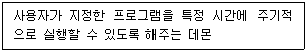
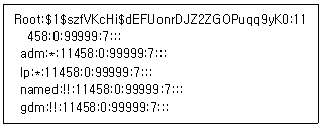
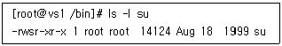
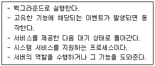
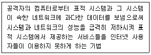
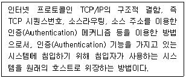
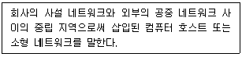
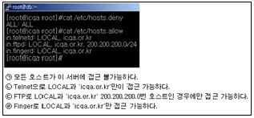
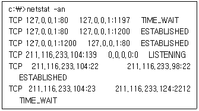

인터넷보안전문가-2급 (2022-04-10 기출문제)
1과목: 정보보호개론
1. IPSec을 위한 보안 연계(Security Association)가 포함하는 파라미터들로만 짝지어진 것은?
- 사용자 ID/ 암호 알고리즘, 암호키, 수명 등의 ESP 관련 정보/ 발신지 IP Address와 목적지 IP Address
- IPSec 프로토콜 모드(터널, 트랜스포트)/ 인증 알고리즘, 인증 키, 수명 등의 AH 관련 정보/ 발신지 포트 및 목적지 포트
- 데이터 민감도/ IPSec 프로토콜 모드(터널, 트랜스포트)/암호 알고리즘, 암호키, 수명 등의 ESP 관련 정보/ 발신지 IP Address와 목적지 IP Address
- IPSec 프로토콜 모드(터널, 트랜스포트)/ 인증 알고리즘, 인증 키, 수명 등의 AH 관련 정보/ 암호 알고리즘, 암호키, 수명 등의 ESP 관련 정보
(정답률: 알수없음)

2. 다음 중 대표적인 공개키 암호화 알고리즘은?
- DES
- IDEA
- RSA
- RC5
(정답률: 알수없음)
3. 공격 유형 중 마치 다른 송신자로부터 정보가 수신된 것처럼 꾸미는 것으로, 시스템에 불법적으로 접근하여 오류의 정보를 정확한 정보인 것처럼 속이는 행위를 뜻하는 것은?
- 차단(Interruption)
- 위조(Fabrication)
- 변조(Modification)
- 가로채기(Interception)
(정답률: 50%)
4. 암호 알고리즘에 대한 설명 중 가장 옳지 않은 것은?
- 관용키 알고리즘, 공개키 알고리즘으로 나눈다.
- 관용키 알고리즘은 비밀키, 대칭키라고도 하며, 블록(Block)형, 시리얼(Serial)형이 있다.
- 보통 관용키 방식은 속도가 빠르지만 비도는 낮은 편이라고 볼 수 있다.
- 공개키 방식은 속도는 느리지만 비도는 높은 편이라고 볼 수 있다.
(정답률: 알수없음)
5. 이산대수 문제에 바탕을 두며 인증메시지에 비밀 세션키를 포함하여 전달할 필요가 없고 공개키 암호화 방식의 시초가 된 키 분배 알고리즘은?
- RSA 알고리즘
- DSA 알고리즘
- MD-5 해쉬 알고리즘
- Diffie-Hellman 알고리즘
(정답률: 60%)
6. S-HTTP(Secure Hypertext Transfer Protocol)에 관한 설명 중 옳지 않은 것은?
- 클라이언트와 서버에서 행해지는 암호화 동작이 동일하다.
- PEM, PGP 등과 같은 여러 암호 메커니즘에 사용되는 다양한 암호문 형태를 지원한다.
- 클라이언트의 공개키를 요구하지 않으므로 사용자 개인의 공개키를 선언해 놓지 않고 사적인 트랜잭션을 시도할 수 있다.
- S-HTTP를 탑재하지 않은 시스템과 통신이 어렵다.
(정답률: 알수없음)
7. 네트워크상의 부당한 피해라고 볼 수 없는 것은?
- 침입자가 부당한 방법으로 호스트의 패스워드 정보를 입수한 후 유용한 정보를 가져가는 경우
- 특정인이나 특정 단체가 고의로 호스트에 대량의 패킷을 흘려 보내 호스트를 마비시키거나 패킷 루프와 같은 상태가 되게 하는 경우
- 특정인이나 특정 단체가 네트워크상의 흐르는 데이터 패킷을 가로채 내거나 다른 불법 패킷으로 바꾸어 보내는 경우
- HTTP 프로토콜을 이용하여 호스트의 80번 포트로 접근하여 HTML 문서의 헤더 정보를 가져오는 경우
(정답률: 알수없음)
8. 불법적인 공격에 대한 데이터 보안을 유지하기 위해 요구되는 기본적인 보안 서비스로 옳지 않은 것은?
- 기밀성(Confidentiality)
- 무결성(Integrity)
- 부인봉쇄(Non-Repudiation)
- 은폐성(Concealment)
(정답률: 알수없음)
9. 보안과 관련된 용어의 정의나 설명으로 옳지 않은 것은?
- 프락시 서버(Proxy Server) - 내부 클라이언트를 대신하여 외부의 서버에 대해 행동하는 프로그램 서버
- 패킷(Packet) - 인터넷이나 네트워크상에서 데이터 전송을 위해 처리되는 기본 단위로 모든 인터페이스에서 항상 16KB의 단위로 처리
- 이중 네트워크 호스트(Dual-Homed Host) - 최소한 두 개의 네트워크 인터페이스를 가진 범용 컴퓨터 시스템
- 호스트(Host) - 네트워크에 연결된 컴퓨터 시스템
(정답률: 알수없음)
10. 인적자원에 대한 보안 위협을 최소화하기 위한 방법으로 옳지 않은 것은?
- 기밀 정보를 열람해야 하는 경우에는 반드시 정보 담당자 한 명에게만 전담시키고 폐쇄된 곳에서 정보를 열람 시켜 정보 유출을 최대한 방지한다.
- 기밀 정보를 처리할 때는 정보를 부분별로 나누어 여러 명에게 나누어 업무를 처리하게 함으로서, 전체 정보를 알 수 없게 한다.
- 보안 관련 직책이나 서버 운영 관리자는 순환 보직제를 실시하여 장기 담당으로 인한 정보 변조나 유출을 막는다.
- 프로그래머가 운영자의 직책을 중임하게 하거나 불필요한 외부 인력과의 접촉을 최소화 한다.
(정답률: 알수없음)
2과목: 운영체제
11. 다음 명령어 중에서 데몬들이 커널상에서 작동되고 있는지 확인하기 위해 사용하는 것은?
- domon
- cs
- cp
- ps
(정답률: 알수없음)
12. 다음이 설명하는 Linux 시스템의 데몬은?

- crond
- atd
- gpm
- amd
(정답률: 80%)
13. 다음 디렉터리에서 각종 라이브러리들에 관한 파일들이 설치되어 있는 것은?
- /etc
- /lib
- /root
- /home
(정답률: 알수없음)
14. 다음 명령어 중에서 시스템의 메모리 상태를 보여주는 명령어는?
- mkfs
- free
- ps
- shutdown
(정답률: 알수없음)
15. 다음 Linux 명령어 중에서 해당 사이트와의 통신 상태를 점검할 때 사용하는 명령어는?
- who
- w
- finger
- ping
(정답률: 알수없음)
16. Linux에서 현재 위치한 디렉터리를 표시해 주는 명령어는?
- mkdir
- pwd
- du
- df
(정답률: 알수없음)
17. Linux에서 네트워크 계층과 관련된 상태를 점검하기 위한 명령어와 유형이 다른 것은?
- ping
- traceroute
- netstat
- nslookup
(정답률: 알수없음)
18. 파일의 허가 모드가 ′-rwxr---w-′이다. 다음 설명 중 옳지 않은 것은?
- 소유자는 읽기 권한, 쓰기 권한, 실행 권한을 갖는다.
- 동일한 그룹에 속한 사용자는 읽기 권한만을 갖는다.
- 다른 모든 사용자는 쓰기 권한 만을 갖는다.
- 동일한 그룹에 속한 사용자는 실행 권한을 갖는다.
(정답률: 알수없음)
19. Linux 시스템의 shadow 파일 내용에 대한 설명으로 올바른 것은?

- lp에서 ′*′은 로그인 쉘을 갖고 있으며, 시스템에 누구나 로그인할 수 있음을 의미한다.
- gdm에서 ′!!′은 로그인 쉘을 갖고 있지만 누구도 계정을 통해서 로그인할 수 없도록 계정이 잠금 상태라는 것을 의미한다.
- 로그인 계정이 아닌 시스템 계정은 named와 gdm 이다.
- root의 암호는 11458 이다.
(정답률: 60%)
20. Linux 시스템이 부팅될 때 나오는 메시지가 저장된 로그 파일의 경로와 명칭으로 올바른 것은?
- /var/log/boot
- /var/log/dmesg
- /var/log/message
- /var/log/secure
(정답률: 알수없음)
21. VI(Visual Interface) 에디터에서 편집행의 줄번호를 출력해주는 명령은?
- :set nobu
- :set nu
- :set nonu
- :set showno
(정답률: 알수없음)
22. 이미 내린 shutdown 명령을 취소하기 위한 명령은?
- shutdown –r
- shutdown –h
- cancel
- shutdown -c
(정답률: 알수없음)
23. Linux에서 su 명령의 사용자 퍼미션을 확인한 결과 ′rws′ 이다. 아래와 같이 사용자 퍼미션에 ′s′ 라는 속성을 부여하기 위한 명령어는?

- chmod 755 su
- chmod 0755 su
- chmod 4755 su
- chmod 6755 su
(정답률: 알수없음)
24. Linux 시스템에서 현재 구동되고 있는 특정 프로세스를 종료하는 명령어는?
- halt
- kill
- cut
- grep
(정답률: 알수없음)
25. 사용자 그룹을 생성하기 위해 사용되는 Linux 명령어는?
- groups
- mkgroup
- groupstart
- groupadd
(정답률: 알수없음)
26. Linux 명령어에 대한 설명으로 옳지 않은 것은?
- ls : 디렉터리를 변경할 때 사용한다.
- cp : 파일을 다른 이름으로 또는 다른 디렉터리로 복사할 때 사용한다.
- mv : 파일을 다른 파일로 변경 또는 다른 디렉터리로 옮길 때 사용한다.
- rm : 파일을 삭제할 때 사용한다.
(정답률: 알수없음)
27. SSL 레코드 계층의 서비스를 사용하는 세 개의 특정 SSL 프로토콜 중의 하나이며 메시지 값이 ′1′인 단일 바이트로 구성되는 것은?
- Handshake 프로토콜
- Change cipher spec 프로토콜
- Alert 프로토콜
- Record 프로토콜
(정답률: 알수없음)
28. 아파치 웹서버 운영 시 서비스에 필요한 여러 기능들을 제어하기 위하여 설정해야 하는 파일은?
- httpd.conf
- htdocs.conf
- index.php
- index.cgi
(정답률: 90%)
29. 일반적으로 다음 설명에 해당하는 프로세스는?

- Shell
- Kernel
- Program
- Deamon
(정답률: 알수없음)
30. Linux에서 TAR로 묶인 ′mt.tar′를 풀어내는 명령은?
- tar –tvf mt.tar
- tar –cvf mt.tar
- tar –cvvf mt.tar
- tar -xvf mt.tar
(정답률: 알수없음)
3과목: 네트워크
31. SNMP(Simple Network Management Protocol)에 대한 설명으로 옳지 않은 것은?
- RFC(Request For Comment) 1157에 명시되어 있다.
- 현재의 네트워크 성능, 라우팅 테이블, 네트워크를 구성하는 값들을 관리한다.
- TCP 세션을 사용한다.
- 상속이 불가능하다.
(정답률: 알수없음)
32. IP Address에 대한 설명으로 옳지 않은 것은?
- A Class는 Network Address bit의 8bit 중 선두 1bit는 반드시 0 이어야 한다.
- B Class는 Network Address bit의 8bit 중 선두 2bit는 반드시 10 이어야 한다.
- C Class는 Network Address bit의 8bit 중 선두 3bit는 반드시 110 이어야 한다.
- D Class는 Network Address bit의 8bit 중 선두 4bit는 반드시 1111 이어야 한다.
(정답률: 알수없음)
33. IPv6 프로토콜의 구조는?
- 32bit
- 64bit
- 128bit
- 256bit
(정답률: 알수없음)
34. OSI 7 Layer에서 암호/복호, 인증, 압축 등의 기능이 수행되는 계층은?
- Transport Layer
- Datalink Layer
- Presentation Layer
- Application Layer
(정답률: 60%)
35. 자신의 물리 주소(MAC Address)는 알고 있으나 자신의 IP Address를 모르는 호스트가 요청 메시지를 브로드 캐스팅하고, 이의 관계를 알고 있는 서버가 응답 메시지에 IP 주소를 되돌려 주는 프로토콜은?
- ARP(Address Resolution Protocol)
- RARP(Reverse Address Resolution Protocol)
- ICMP(Internet Control Message Protocol)
- IGMP(Internet Group Management Protocol)
(정답률: 70%)
36. 다음 프로토콜 중 OSI 7 Layer 계층이 다른 프로토콜은?
- ICMP(Internet Control Message Protocol)
- IP(Internet Protocol)
- ARP(Address Resolution Protocol)
- TCP(Transmission Control Protocol)
(정답률: 알수없음)
37. OSI 7 Layer 구조에서 계층 7에서 계층 4까지 차례대로 나열한 것은?
- 응용(Application) - 세션(Session) - 표현(Presentation) - 전송(Transport)
- 응용(Application) - 표현(Presentation) - 세션(Session) - 전송(Transport)
- 응용(Application) - 표현(Presentation) - 세션(Session) - 네트워크(Network)
- 응용(Application) - 네트워크(Network) - 세션(Session) - 표현(Presentation)
(정답률: 90%)
38. 인터넷 IPv4 주소 Class에서 ′203.249.114.2′가 속한 Class는?
- A Class
- B Class
- C Class
- D Class
(정답률: 알수없음)
39. ′서비스′ - ′Well-Known 포트′ - ′프로토콜′의 연결이 옳지 않은 것은?
- FTP - 21 – TCP
- SMTP - 25 – TCP
- DNS - 53 – TCP
- SNMP - 191 - TCP
(정답률: 알수없음)
40. 디지털 데이터를 디지털 신호 인코딩(Digital Signal Encoding)하는 방법으로 옳지 않은 것은?
- NRZ(Non Return to Zero)
- Manchester
- PCM(Pulse Code Modulation)
- Differential Manchester
(정답률: 알수없음)
41. 근거리 통신망 이더넷 표준에서 이용하는 매체 액세스 제어 방법은?
- Multiple Access(MA)
- Carrier Sense Multiple Access(CSMA)
- Carrier Sense Multiple Access/Collision Detection(CSMA/CD)
- Token Passing
(정답률: 알수없음)
42. TCP는 연결 설정과정에서 3-way handshaking 기법을 이용하여 호스트 대 호스트의 연결을 초기화 한다. 다음 중 호스트 대 호스트 연결을 초기화할 때 사용되는 패킷은?
- SYN
- RST
- FIN
- URG
(정답률: 50%)
43. 오류검출 방식인 ARQ 방식 중에서 일정한 크기 단위로 연속해서 프레임을 전송하고 수신측에서 오류가 발견된 프레임에 대하여 재전송 요청이 있을 경우 잘못된 프레임 이후를 다시 전송하는 방법은?
- 정지-대기 ARQ
- Go-back-N ARQ
- Selective Repeat ARQ
- 적응적 ARQ
(정답률: 알수없음)
44. 다음 중 IP Address관련 기술들에 대한 설명으로 옳지 않은 것은?
- DHCP는 DHCP서버가 존재하여, 요청하는 클라이언트들에게 IP Address, Gateway, DNS등의 정보를 일괄적으로 제공하는 기술이다.
- 클라이언트가 DHCP 서버에 DHCP Request를 보낼 때 브로드캐스트로 보낸다.
- 192.168.10.2는 사설 IP Address이다.
- 공인 IP Address를 다른 공인 IP로 변환하여 내보내는 기술이 NAT이다.
(정답률: 알수없음)
45. 다음 중 OSI 7 Layer의 각 Layer 별 Data 형태로서 옳지 않은 것은?
- Transport Layer : Segment
- Network Layer : Packet
- Datalink Layer : Fragment
- Physical Layer : bit
(정답률: 알수없음)
4과목: 보안
46. SSL(Secure Socket Layer)의 설명 중 옳지 않은 것은?
- SSL에서는 키 교환 방법으로 Diffie_Hellman 키 교환방법만을 이용한다.
- SSL에는 Handshake 프로토콜에 의하여 생성되는 세션과 등위간의 연결을 나타내는 연결이 존재한다.
- SSL에서 Handshake 프로토콜은 서버와 클라이언트가 서로 인증하고 암호화 MAC 키를 교환하기 위한 프로토콜이다.
- SSL 레코드 계층은 분할, 압축, MAC 부가, 암호 등의 기능을 갖는다.
(정답률: 50%)
47. 다음에서 설명하는 것은?

- Buffer Overflow
- Sniffing
- IP Spoofing
- Denial of Service
(정답률: 알수없음)
48. 다음에서 설명하는 기법은?

- IP Sniffing
- IP Spoofing
- Race Condition
- Packet Filtering
(정답률: 알수없음)
49. 네트워크 취약성 공격으로 옳지 않은 것은?
- Scan 공격
- IP Spoofing 공격
- UDP 공격
- Tripwire 공격
(정답률: 알수없음)
50. 다음은 어떤 보안 도구를 의미하는가?

- IDS
- DMZ
- Firewall
- VPN
(정답률: 알수없음)
51. 지정된 버퍼보다 더 많은 데이터를 입력해서 프로그램이 비정상적으로 동작하도록 하는 해킹 방법은?
- DoS
- Trojan Horse
- Worm Virus Backdoor
- Buffer Overflow
(정답률: 알수없음)
52. PGP(Pretty Good Privacy)에서 지원하지 못하는 기능은?
- 메시지 인증
- 수신 부인방지
- 사용자 인증
- 송신 부인방지
(정답률: 알수없음)
53. 방화벽의 주요 기능으로 옳지 않은 것은?
- 접근제어
- 사용자 인증
- 로깅
- 프라이버시 보호
(정답률: 알수없음)
54. 아래 TCP_Wrapper 설정 내용으로 올바른 것은?

- ㉠, ㉢
- ㉡, ㉣
- ㉠, ㉡, ㉢
- ㉡, ㉢, ㉣
(정답률: 50%)
55. Windows 명령 프롬프트 창에서 ′netstat -an′ 을 실행한 결과이다. 옳지 않은 것은?(단, 로컬 IP Address는 211.116.233.104 이다.)

- http://localhost 로 접속하였다.
- NetBIOS를 사용하고 있는 컴퓨터이다.
- 211.116.233.124에서 Telnet 연결이 이루어져 있다.
- 211.116.233.98로 ssh를 이용하여 연결이 이루어져 있다.
(정답률: 알수없음)
56. Linux 명령어 중 ′/var/log/utmp′와 ′/var/log/wtmp′를 모두 참조하는 명령어는?
- lastlog
- last
- who
- netstat
(정답률: 알수없음)
57. Windows Server의 각종 보안 관리에 관한 설명이다. 그룹정책의 보안 설정 중 옳지 않은 것은?
- 계정정책 : 암호정책, 계정 잠금 정책, Kerberos v5 프로토콜 정책 등을 이용하여 보안 관리를 할 수 있다.
- 로컬정책 : 감사정책, 사용자 권한 할당, 보안 옵션 등을 이용하여 보안 관리를 할 수 있다.
- 공개키 정책 : 암호화 복구 에이전트, 인증서 요청 설정, 레지스트리 키 정책, IP보안 정책 등을 이용하여 보안 관리를 할 수 있다.
- 이벤트 로그 : 응용 프로그램 및 시스템 로그 보안 로그를 위한 로그의 크기, 보관 기간, 보관 방법 및 액세스 권한 값 설정 등을 이용하여 보안 관리를 할 수 있다.
(정답률: 알수없음)
58. 스푸핑 공격의 한 종류인 스위치 재밍(Switch Jamming) 공격에 대한 순차적 내용으로 옳지 않은 것은?
- 스위치 허브의 주소 테이블에 오버 플로우가 발생하게 만든다.
- 스위치가 모든 네트워크 포트로 브로드 캐스팅하게 만든다.
- 오버 플로우를 가속화하기 위하여 MAC 주소를 표준보다 더 큰 값으로 위조하여 스위치에 전송한다.
- 테이블 관리 기능을 무력화 하고 패킷 데이터를 가로챈다.
(정답률: 알수없음)
59. 라우터에 포함된 SNMP(Simple Network Management Protocol) 서비스의 기본 설정을 이용한 공격들이 많다. 이를 방지하기 위한 SNMP 보안 설정 방법으로 옳지 않은 것은?
- 꼭 필요한 경우가 아니면 읽기/쓰기 권한을 설정하지 않는다.
- 규칙적이고 통일성이 있는 커뮤니티 값을 사용한다.
- ACL을 적용하여 특정 IP Address를 가진 경우만 SNMP 서비스에 접속할 수 있도록 한다.
- SNMP를 TFTP와 함께 사용하는 경우, ′snmp-server tftp-server-list′ 명령으로 특정 IP Address만이 서비스에 접속할 수 있게 한다.
(정답률: 알수없음)
60. Router에서는 IP 및 패킷을 필터링 하기 위한 Access Control List를 사용할 때 주의사항으로 올바른 것은?
- 라우터에 연산 부담을 덜기 위하여 상세하고, 큰 용량의 ACL을 유지하여야 한다.
- 시스코 라우터는 입력 트래픽 보다 출력 트래픽에 ACL을 적용하는 것이 효율적이다.
- 라우터 트래픽 감소를 위해 Netflow을 함께 작동 시킨다.
- ACL을 이용한 출력 트래픽 필터링은 위조된 IP가 유출되는 것을 방지한다.
(정답률: 알수없음)